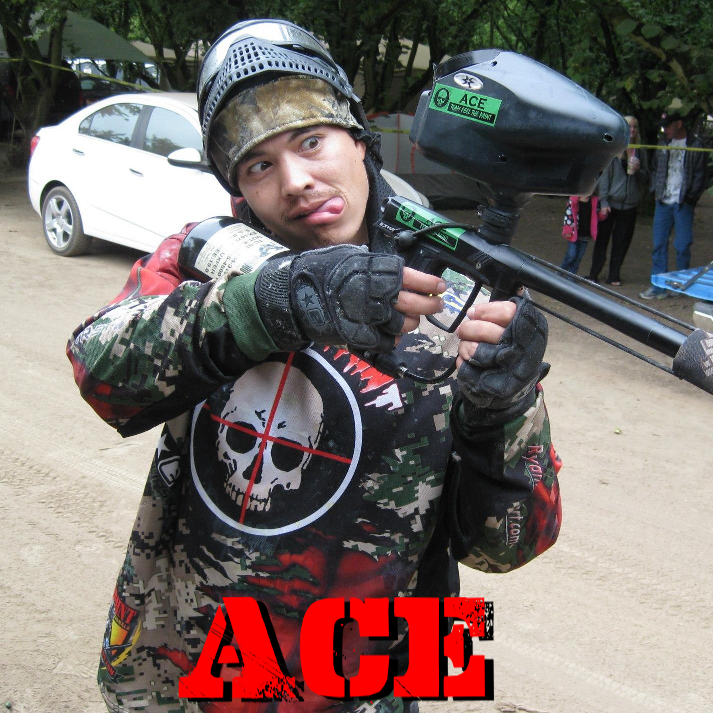

Ryan Smith

West Valley City, UT

1

2012 Planet Eclipse Etha / T2 CCM Pump
Dye i4 / JT Proflex

All sports, MMA, Camping, ATV's

"ACE" in the hole.

I'am a project manager / electrician & Veteran of the US Air force. I was born born April 1974, I'm 38.
My son, "Talmage" introduced me to paintball when he wanted to be part of a team with his friends.
So I went down to Paintball Addicts to check it out.
They talked me into playing & after my first game I was hooked! Something just clicked & I fell in love. We have been playing every week since then. I ended up being captain of that team until I met the Awesomeness that is FEEL THE PAINT. The sportsmanship & comradery was incredible, something I have always lived by.
When Brady "B-Dazl" asked us to join the team It just felt like coming home.
Now I dedicate my time with the team to help grow the sport of paintball & keep sportsmanship alive at all times & levels.

I enjoy Speedball & Scenario/woodsball almost equally. I'm mostly a front man & like to get right into the action. I play smart & always with sportsmanship, but do have a tendency to attack Kamikaze style :)